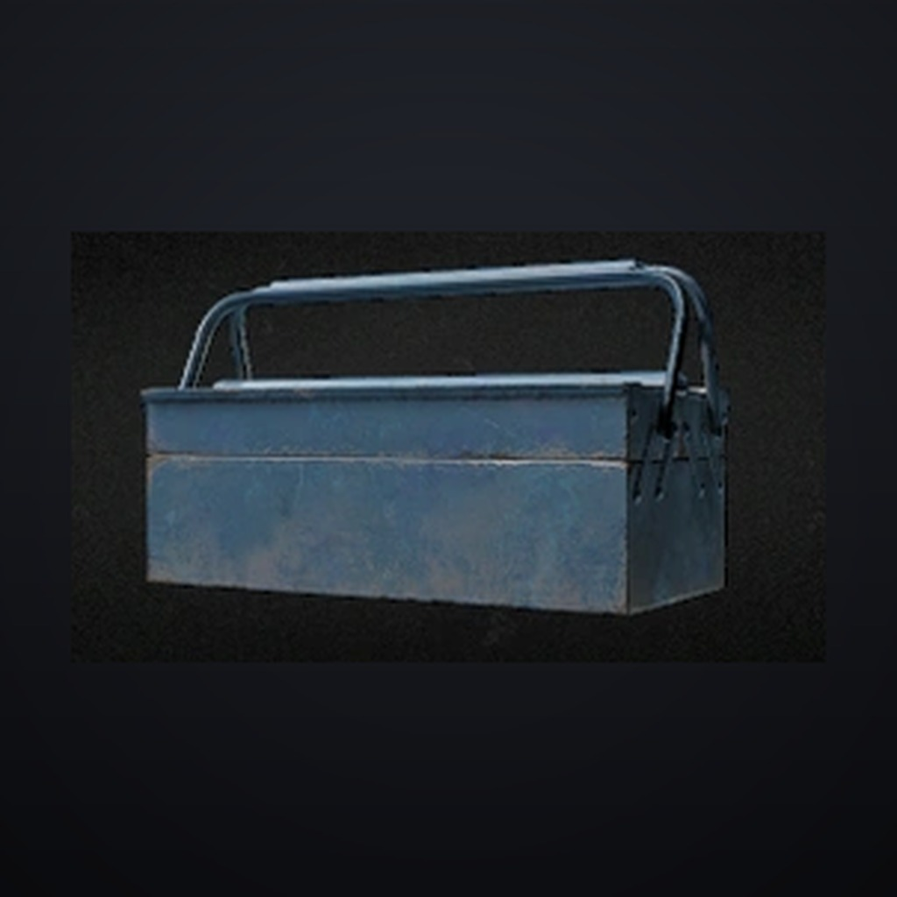

1. Le Workbench, comment ça marche
Le Workbench est l'établi de la Trophy Room. Il transforme des objets divers (et parfois des Koen) en munitions, médicaments, objets tactiques et équipement, sur plusieurs heures réelles de craft. Chaque formule affiche :
- un compteur de « Times Formula Crafted »,
- son statut de recherche et un bouton de partage,
- un prix de réapprovisionnement (coût des pièces manquantes),
- un prix de vente au contact (contact selling price).
L'ordre de construction qui compte
Construisez d'abord la Living Area, puis le Workbench niveau 0 → 4. Monter le Workbench avant la Living Area, c'est affamer votre sustain de raid pour un gain de craft : les deux se disputent les mêmes Koen de départ.
2. Ce qui change en Saison 7
| Changement | Avant | Saison 7 |
|---|---|---|
| Niveau des formules | Il fallait les faire monter | Elles sont au niveau maximum dès l'obtention |
| Exigences de matériaux | Tables de coût de l'avant 16 septembre 2026 | Réajustées à un niveau plus raisonnable |
| Usages des objets divers | Limités | De nouveaux usages : montres de gousset, carnets d'ouvrier, analyseurs de gaz servent maintenant à craft des munitions |
| Nouvel objet tactique craftable | — | Grenade étourdissante M290 |
| Recherche d'amélioration | — | Nouveau système complet avec l'Improvement Blueprint |
| Partage de formules | Impossible | On peut visiter les Trophy Rooms d'amis et apprendre leurs formules ; le propriétaire reçoit des blueprints d'assistance prioritaires |
| Fonction « Check Usage » | — | Dans le Storage, les objets divers montrent quels contacts les échangent et quelles formules les utilisent |
3. L'Improvement Research
Le cœur de la S7 côté craft. Vous trouvez des Improvement Blueprint en raid, vous les dépensez sur une formule, et vous choisissez 2 résultats parmi les options tirées au sort. Les résultats non sélectionnés sont perdus.
| Résultat | Effet type | Score (captures d'écran) |
|---|---|---|
| Research Expert | Réduit de 10 % le nombre de blueprints requis | — |
| Fast Track I | Réduit le temps de craft | 30 |
| Steady Boost I | Amélioration de la production | — |
| Tactical Synergy II | Bonus contextuel sur la recette (« 20× ×1 », « Commander ×1 » sur .338 AP) | 40 |
| Scrap Recovery III | Chance de récupérer les matériaux | 60 |
| Unexpected Surplus IV | Chance d'annuler tous les coûts | 94 |
| First-Rate Provisions | Chance de transformer un casque SH65 en IND70 | — |
Le score de recherche
Le Season Improvement Research Score d'une formule est la somme des scores de ses deux résultats. Il sert à comparer les combinaisons — il ne change pas mécaniquement les chances d'obtention d'un objet (point non confirmé par l'éditeur).
Le datamining communautaire recense environ 25 recettes researchables et 721 résultats possibles — d'où le caractère très aléatoire des tirages. (Chiffres non officiels.)
4. Où trouver les blueprints
- En raid, avec une probabilité plus forte dans les boîtes à documents, les vêtements et les tiroirs.
- Via les missions actives.
- Via le Marché et les contacts.
- Via vos amis : vous appris leur formule, ils reçoivent des blueprints d'assistance, qui sont prioritaires dans votre file de recherche.
Le partage de formule, mode d'emploi
Icône d'amis → choisir un joueur → entrer dans sa Trophy Room → aller à son Workbench → sélectionner une formule disponible → l'étudier. Vous recevez une formule de test utilisable sur votre Workbench. Le propriétaire, lui, reçoit des blueprints d'assistance. On ne peut pas produire chez quelqu'un d'autre.
5. Les coûts et temps de craft
| Recette | Niveau Workbench | Temps | Quantité | Matériaux |
|---|---|---|---|---|
| .45 AP | 1 | 6 h | 120 | Câble de données, lecteur de disquette, poudre bleue |
| 5.7×28 L191 | 1 | 6 h | 120 | Couteau de chasse, multimètre, poudre bleue |
| 7.62×25 PS | 1 | 6 h | 120 | Réveil de bureau, lecteur de disquette, poudre bleue |
| 7.62×39 BP | 2 | 12 h | 120 | Antenne, cartouche de jeu, poudre verte |
| 7.62×54 LPS | 2 | 12 h | 60 | Antenne, cartouche de jeu, poudre verte |
| 5.7×28 SS190 | 2 | 12 h | 120 | Plaque de titane, carte de circuit, poudre rouge |
| 7.62×51 M61 | 3 | 16 h | 30 | Bobine haute fréquence, carburant haute énergie, nitrocellulose |
| 7.62×54 SNB | 3 | 20 h | 20 | Réservoir de carburant, plaque de titane, nitrocellulose |
| .338 AP | 3 | 24 h | 10 | Pack de batteries, antenne, nitrocellulose |
| 7.62×54 7N37 (T7) | 4 | 28 h | 20 | Cube d'or, carburant haute énergie, nitrocellulose |
| IND70 Tactical Helmet | 5 | 40 h | 1 | 2 Metal Hearts, 2 Sound-Muffling Cotton, 4 Space Boy comics, 500 000 Koen |
| BT201 Full Body Armor | 5 | 40 h | 1 | 2 Porcelaine, 2 plaques de titane, 4 Space Boy comics, 500 000 Koen |
| T7 Thermal Imager | 3 | 48 h | 1 | Modèle satellite Sergey, niveau, module laser |
| Traitement Ultra-Strength expérimental | 4 | 20 h | 1 | Testeur portable, thermomètre, seringue |
| Battlefield First Aid Kit Set | 4 | 20 h | 1 | Pompe à insuline, injection de glucose, ciseaux médicaux |
| Improved Multi-Burst Flashbang | — | 6 h | 5 | Bouteille de propane, photomètre, lampe à kérosène |
Temps de craft : la vraie contrainte
Le craft est en temps réel. Une IND70 ou un BT201 demande 40 heures. L'IND70 est craftable au niveau 5 de Workbench et son prix de réapprovisionnement s'élève à 1 784 194 Koen dans une capture de la communauté. Avec un bonus Unexpected Surplus IV à 30 %, vous économisez en moyenne 535 000 Koen par craft. C'est le meilleur argument pour farmer des blueprints.
6. Quelles formules researcher en premier
- Les munitions que vous tirez vraiment — un résultat « +20 à +60 cartouches » à 100 % se paie sur chaque craft. Un joueur a obtenu +30 % puis +40 % sur sa .45 APWC T4.
- Les crafts d'équipement chers — IND70, BT201, SH65 : plus le craft est cher, plus un remboursement vaut.
- Les médicaments et stimulants — la communauté rapporte 20 % de remboursement sur le Traitement Ultra-Strength et 100 % sur trois stimulants de régénération (12 h de soin en plus).
Les règles d'or de la recherche
1) Ne dispersez pas vos blueprints sur toutes les formules : concentrez-les sur 2 ou 3 recettes que vous craftz souvent.
2) Visez les hautes raretés : Unexpected Surplus et First-Rate Provisions sont les plus rentables.
3) Ne négligez pas le retour de matériaux : pour une production coûteuse, un remboursement vaut mieux qu'un gain de vitesse.
4) Combinez : retour de matériaux + production supplémentaire.
5) Comparez le prix de revient : si les matériaux coûtent plus cher que le résultat ne vaut, ne craftz qu'avec un bonus de remboursement ou de surproduction.
7. Le reset de saison
Les résultats de recherche sont réinitialisés à chaque saison. Les recettes, elles, restent débloquées. Concrètement : ce que vous researches en S7 ne sert qu'en S7. Ne dispersez pas vos blueprints en fin de saison sur des bonuses « SURPLUS » — ils perdront toute valeur au reset.
8. Check-list Workbench
- Living Area d'abord, puis Workbench niveau par niveau.
- Choisir une formule de munitions que vous tirez, et la researched jusqu'à 2 bons résultats.
- Activer la fonction « Check Usage » dans le Storage avant de vendre un matériau : il peut entrer dans une formule.
- Installer les blueprints d'assistance de vos amis en premier : ils sont prioritaires.
- En fin de saison : ne plusammy de blueprints sur des bonus à durée limitée.
Pour la valeur des matériaux finis, voir le guide de la valeur. Pour les munitions elles-mêmes, voir le guide des munitions.